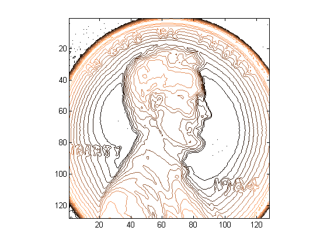
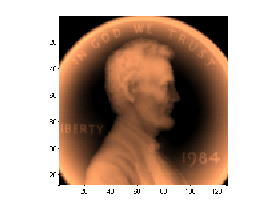
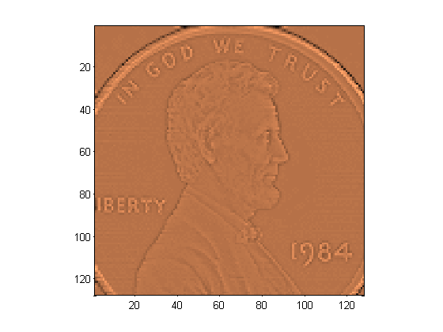
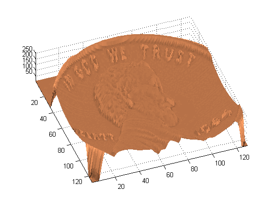

The file PENNY.MAT contains measurements made at the National Institute of Standards and Technology of the depth of the mold used to mint a U. S. penny, sampled on a 128-by-128 grid.
Draw a contour plot with 15 copper colored contour lines.
load penny.mat contour(P,15) colormap(copper) axis ij square
Draw a pseudocolor plot with brightness proportional to height.
pcolor(P) axis ij square shading flat
Draw a pseudocolor plot with brightness proportional to the Laplacian of the height. A cell is bright if its height is greater than the average of its four neighbors and dark if its height is less than the average of its four neighbors. This is an unusual "lighting model", but it produces an image that looks like a photograph of a penny.
D = -del2(P); pcolor(D) axis ij square shading flat
Finally, produce a 3-D, copper colored, surface plot with the Laplacian lighting model.
surf(P,D); axis('ij','tight') shading('flat') view(-20,75)